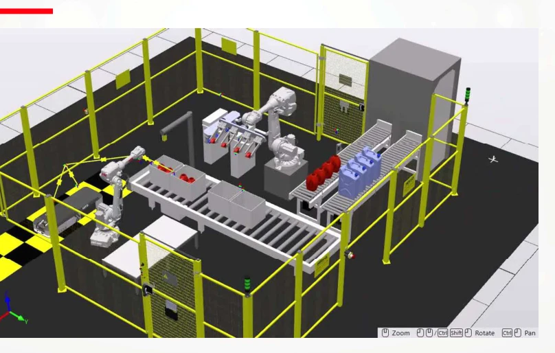
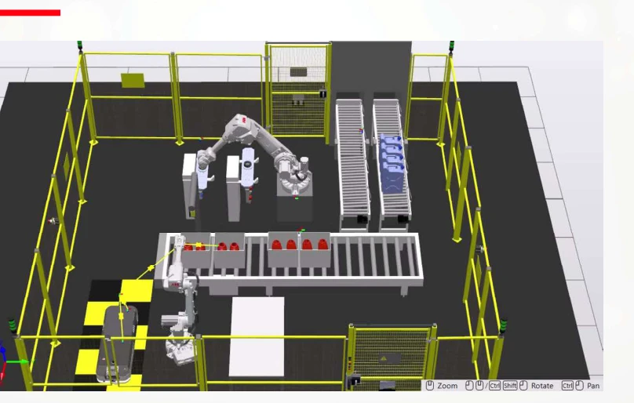

Designing a coordinated packaging cell.
Led an academic packaging and palletizing proposal supported by robot simulation and technical evaluation.
Simulation / proposalInside the project.
Selected visuals from the academic team’s original presentation. Captions distinguish physical hardware from simulation.


The challenge
Evaluate how two robots, tooling, conveyors and vision could coordinate packaging and palletizing operations.
My contribution
- Developed the dual-robot cell concept and layout with the project team.
- Worked on RobotStudio simulations and RAPID routines for handling and palletizing.
- Contributed to tooling, technical evaluation and the financial proposal.
- Prepared stakeholder presentations and communicated the proposed solution.
What the simulation evaluates
The team explored bottle handling, packing and palletizing for two container formats. Cell layouts and end-of-arm tooling were evaluated digitally; the visualizations show the proposed system rather than an installed production line.
Engineering focus
Use the simulated cell to evaluate coordination and layout before proposing implementation.
Outcome & scope
The proposal projected throughput from 24 to 29 bottles/min. This is an estimate, not a measured factory improvement. The project was selected for ExpoIngenierías.
Professional experience and academic collaborations are labeled separately. Organization names identify the project context and do not imply endorsement.